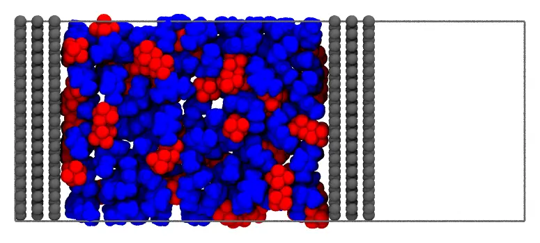
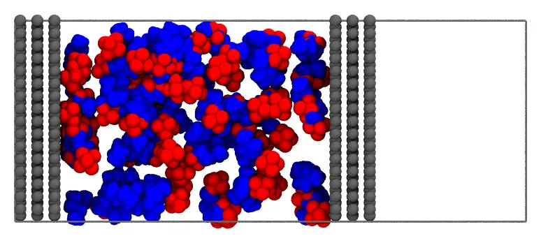

Ionic liquid in a supercapacitor
The ionic liquid 1-butyl-3-methylimidazolium hexafluorophosphate, [BMIM][PF₆], between two charged graphite electrodes: the cell of an electric double-layer capacitor (supercapacitor), which stores charge in the layers of ions at the surfaces of its electrodes. The electrodes are fixed, periodic in x and y, and the liquid is packed between them, with the composition of the first layer of ions on each electrode set by the charge of the electrode.

A slice of 12 Å of the system, seen along y: the cathode (left) and the anode (right), the cations (blue) and the anions (red), and the periodic cell, closed by a vacuum gap beyond the anode.
Files: electrodes.pdb, bmim.pdb, pf6.pdb, and the input file supercapacitor.inp.
The structures
- The electrodes: two blocks of graphite, of three graphene layers each (AB stacked, 3.35 Å apart), 39.36 × 42.60 Å, a whole number of cells of graphene, so that the sheets are continuous across the periodic boundaries in
xandy. The surfaces of the electrodes facing the liquid are atz = 7.7(the cathode) andz = 62.7Å (the anode). They were built by the scriptelectrodes.jl:
The script electrodes.jl (click to expand)
#
# The electrodes of the supercapacitor (electrodes.pdb): two blocks of graphite, of three
# graphene layers each (AB stacked, 3.35 Å apart), periodic in x and y (39.36 x 42.60 Å).
# The cathode has its layers at z = 1.0, 4.35 and 7.7 Å, the anode at z = 62.7, 66.05 and
# 69.4 Å.
#
# julia electrodes.jl electrodes.pdb
#
using PDBTools
nx, ny = 16, 10 # rectangular cells of graphene, of 2.46 x 4.26 Å
a, b = 2.46, 4.26
basis = [(0.0, 0.0), (1.23, 0.71), (1.23, 2.13), (0.0, 2.84)] # C–C bonds of 1.42 Å
layers = [(1.0, 0.0), (4.35, 1.42), (7.70, 0.0), # (z, shift in y of the B layers)
(62.70, 0.0), (66.05, 1.42), (69.40, 0.0)]
atoms = Atom{Nothing}[]
for (il, (z, dy)) in enumerate(layers), i in 0:nx-1, j in 0:ny-1, (bx, by) in basis
resname, chain = il <= 3 ? ("CAT", "A") : ("ANO", "B") # cathode, anode
push!(atoms, Atom(; name = "C", resname, resnum = 1, chain,
x = i * a + bx, y = mod(j * b + by + dy, ny * b), z, pdb_element = "C"))
end
write_pdb(ARGS[1], atoms)
println(length(atoms), " atoms, cell of ", nx * a, " x ", ny * b, " Å")
- The ions: the cation was built by Open Babel from its SMILES (
obabel -:"CCCCn1cc[n+](C)c1" -O bmim.pdb --gen3d -h), and the anion, an octahedron with P–F bonds of 1.59 Å, by hand.
The numbers of ions
The periodic cell, pbc 39.36 42.6 100.0, has the electrodes and the liquid between them, and a vacuum gap of 30 Å beyond the anode, which separates the anode from the periodic image of the cathode. The cell is periodic in z too, as Packmol's periodic cells are, but the gap keeps the two electrodes apart, as in the simulations of electrode interfaces (with a correction of the electrostatics of the slab).
The space between the electrodes available to the ions, given by free_volume (see Volume estimates), is 85900 ų, which holds 250 ion pairs at the density of [BMIM][PF₆], 1.37 g/mL (284.2 g/mol per ion pair).
The electrodes carry charges of -10 e (the cathode) and +10 e (the anode): 9.6 μC/cm² on their 1677 Ų, the order of the charges of the electrodes of supercapacitors. Each charge is screened by the first layer of ions on the electrode, the 8 Å nearest to it, which has 10 more counterions than coions:
| Region | z (Å) | Cations | Anions | Charge |
|---|---|---|---|---|
| layer on the cathode | 7.7 – 15.7 | 35 | 25 | +10 |
| bulk liquid | 15.7 – 54.7 | 190 | 190 | 0 |
| layer on the anode | 54.7 – 62.7 | 25 | 35 | -10 |
Every region has the density of the liquid, in the volume available to its ions (free_volume again: 10300 ų in each layer, 65400 ų in the bulk). The whole system, 250 ion pairs, is neutral.
Command line
The input file supercapacitor.inp (click to expand)
#
# A supercapacitor: the ionic liquid [BMIM][PF6] between two graphite electrodes, periodic
# in x and y, with a vacuum gap closing the cell in z. The electrodes carry -10 e (cathode,
# z < 7.7) and +10 e (anode, z > 62.7), about 9.6 uC/cm2, screened by the first layer of
# ions on each electrode (8 A): 35 cations and 25 anions on the cathode, 25 cations and
# 35 anions on the anode. Everywhere the density of the liquid (1.37 g/mL).
#
# check_initial_placement
tolerance 2.0
output supercapacitor.pdb
pbc 39.36 42.6 100.0
structure electrodes.pdb
number 1
fixed 0. 0. 0. 0. 0. 0.
radius 1.5
end structure
# The layer on the cathode: net charge +10
structure bmim.pdb
number 35
inside box 0. 0. 7.7 39.36 42.6 15.7
end structure
structure pf6.pdb
number 25
inside box 0. 0. 7.7 39.36 42.6 15.7
end structure
# The neutral liquid between the layers
structure bmim.pdb
number 190
inside box 0. 0. 15.7 39.36 42.6 54.7
end structure
structure pf6.pdb
number 190
inside box 0. 0. 15.7 39.36 42.6 54.7
end structure
# The layer on the anode: net charge -10
structure bmim.pdb
number 25
inside box 0. 0. 54.7 39.36 42.6 62.7
end structure
structure pf6.pdb
number 35
inside box 0. 0. 54.7 39.36 42.6 62.7
end structure
The electrodes are a single fixed molecule (see Fixed molecules), with the radius of their atoms set to 1.5 Å, so that the atoms of the ions are at least 2.5 Å from the carbon atoms. Each region of the table above is a box, and each kind of ion in it a structure block: the cations and the anions of the same region have the same constraint, and the composition of the region is given by their numbers. The whole ions are kept in their regions: the boundaries between the regions are planes, which the packing does not cross, and a simulation relaxes them.
Check the initial placement first
Uncomment the check_initial_placement line of the input file, and run it as below (see Checking the initial placement): the initial placement, written to the output file in a fraction of a second, has the ions in their regions, between the electrodes:

When it does, comment the line again, and run the packing.
Packing
packmol supercapacitor.inpThe packing (11840 atoms) takes about a second.
Julia
using Packmolelectrodes = structure_type("electrodes.pdb"; number = 1, fixed = ([0., 0., 0.], [0., 0., 0.]), radius = 1.5,)# The regions between the electrodes, in zregion(zmin, zmax) = InsideBox([0., 0., zmin], [39.36, 42.6, zmax])cathode_layer, bulk, anode_layer = region(7.7, 15.7), region(15.7, 54.7), region(54.7, 62.7)ions = [ structure_type("bmim.pdb"; number = 35, constraints = [cathode_layer]), structure_type("pf6.pdb"; number = 25, constraints = [cathode_layer]), structure_type("bmim.pdb"; number = 190, constraints = [bulk]), structure_type("pf6.pdb"; number = 190, constraints = [bulk]), structure_type("bmim.pdb"; number = 25, constraints = [anode_layer]), structure_type("pf6.pdb"; number = 35, constraints = [anode_layer]),]system = PackmolSystem([electrodes; ions]; output = "supercapacitor.pdb", tolerance = 2.0, unitcell = [39.36 0. 0.; 0. 42.6 0.; 0. 0. 100.0], unitcell_center = [19.68, 21.3, 50.0], # the cell of `pbc`, from the origin # check_initial_placement = true, # uncomment to only place the molecules)packmol(system)To build the capacitor at another voltage, change the numbers of the layers: the charge of each electrode is the difference between the counterions and the coions of its layer.